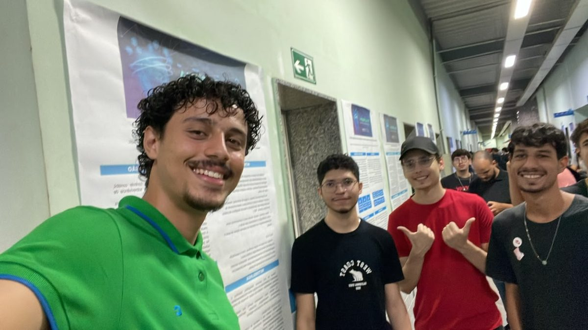
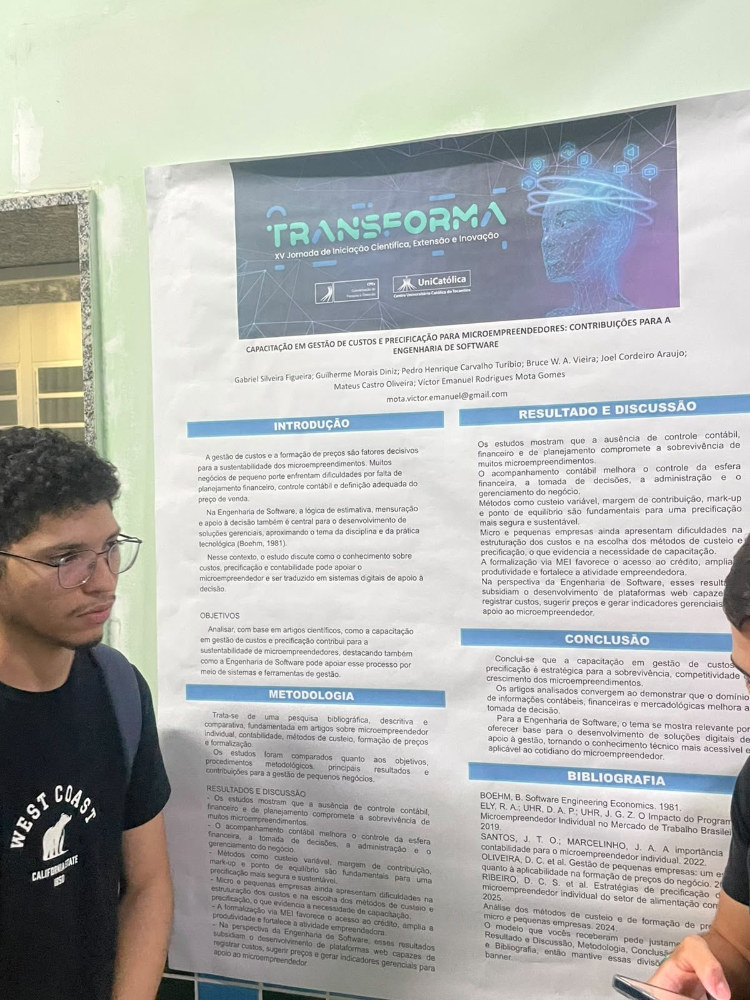
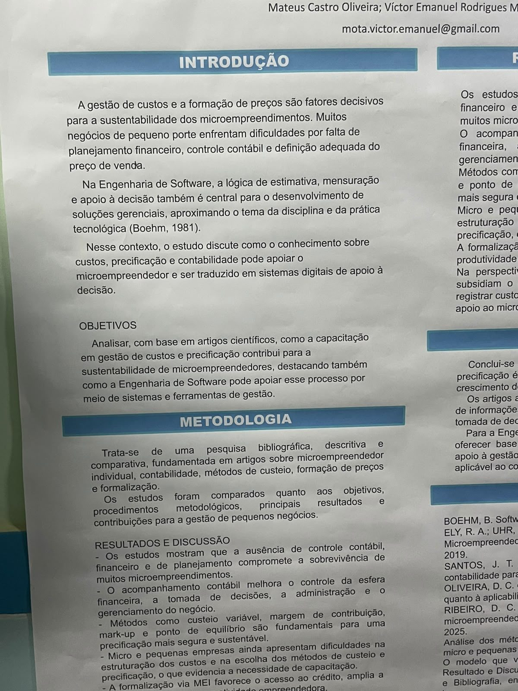
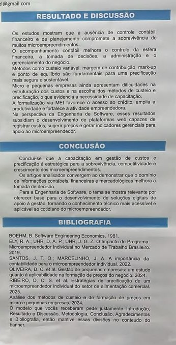

Preço certo, negócio vivo: estudo liga gestão de custos à sobrevivência dos microempreendedores
Pesquisa apresentada no TRANSFORMA mostra como capacitação em custos e precificação pode sustentar pequenos negócios e inspirar sistemas digitais de apoio
Por Pedro Henrique Mendonça Passos · · UniCatólica – Centro Universitário Católico do Tocantins

Objetivo do projeto
O estudo quer entender como a capacitação em gestão de custos e precificação pode ajudar a manter vivos os pequenos negócios. A meta é reunir, em artigos científicos, o que já se sabe sobre custeio, formação de preços e formalização.
Além disso, os autores querem mostrar como a Engenharia de Software pode transformar esse conhecimento em sistemas digitais de apoio à decisão.
Problema a ser resolvido
Muitos microempreendimentos funcionam sem planejamento financeiro, sem controle contábil e sem um método para calcular o preço de venda. O resultado é o dono que trabalha o dia inteiro, mas não sabe se tem lucro no fim do mês.
Segundo o cartaz, essa falta de controle compromete a sobrevivência do negócio e limita o seu crescimento, o que torna o tema importante para a economia de qualquer cidade.
Área de atuação
O projeto se encaixa na gestão financeira e no empreendedorismo, com uma ponte para a Engenharia de Software. A lógica de estimativa, mensuração e apoio à decisão, citada a partir de Boehm (1981), liga o mundo dos pequenos negócios ao desenvolvimento de sistemas gerenciais.
Público-alvo
O cartaz não detalha segmentos; esta leitura é interpretação do autor. O tema aponta para microempreendedores individuais (MEIs), donos de pequenos comércios e prestadores de serviço que precisam calcular custos e definir preços.
Em geral, são pessoas que tocam o negócio sozinhas ou com poucos funcionários, sem formação em contabilidade e com pouco tempo para planilhas complexas.
Possíveis partes interessadas
Além dos empreendedores, têm interesse no tema os contadores, que orientam a formalização, e instituições de apoio empresarial, como o Sebrae. Bancos e cooperativas de crédito também entram na lista, já que o MEI formalizado tem mais acesso a financiamento.
Desenvolvedores de sistemas de gestão e universidades, que podem levar capacitação à comunidade, completam o grupo.
Estado do mercado e concorrentes
O mercado já resolve parte do problema, com sistemas de gestão e iniciativas de capacitação voltados ao pequeno empresário. Entre as soluções semelhantes estão:
- Conta Azul: sistema online de gestão financeira para pequenas empresas, com contas a pagar e receber e fluxo de caixa.
- Bling: ERP online que organiza vendas, estoque e notas fiscais de pequenos comércios.
- Sebrae: cursos, consultorias e conteúdos gratuitos sobre formação de preços e gestão do negócio.
Diferencial
Os concorrentes citados são produtos ou serviços prontos; o estudo parte da capacitação. Seu diferencial é defender que o empreendedor precisa primeiro entender custeio variável, margem de contribuição e mark-up, e só então usar a tecnologia a seu favor.
A pesquisa também aproxima gestão financeira e Engenharia de Software, apontando requisitos para futuras plataformas web de custos e preços.
Tecnologias
A equipe apresentou apenas informações teóricas, e o cartaz não informa a criação de aplicativo ou sistema. A base do trabalho é uma pesquisa bibliográfica, descritiva e comparativa de artigos científicos.
Os instrumentos citados são conceitos de gestão: custeio variável, margem de contribuição, mark-up e ponto de equilíbrio.
Análise crítica do autor
Pontos fortes
O tema é relevante e próximo da realidade de muita gente: quase todos conhecem um pequeno negócio que fechou por falta de controle. O cartaz é organizado e a conclusão liga o assunto à Engenharia de Software.
Pontos a melhorar
Faltam exemplos práticos, números e casos reais de microempreendedores. Como não há protótipo, fica difícil enxergar como a tecnologia ajudaria na prática.
Sugestão do autor para a equipe
Sugiro transformar a pesquisa em um protótipo simples, como uma calculadora de preço com mark-up e ponto de equilíbrio, e testá-lo com MEIs reais.
Equipe e autorização
Participaram do projeto:
- Gabriel Silveira Figueira
- Guilherme Morais Diniz
- Pedro Henrique Carvalho Túrbio
- Bruce W. A. Vieira
- Joel Cordeiro Araujo
- Mateus Castro Oliveira
- Víctor Emanuel Rodrigues Mota Gomes
A equipe autorizou a divulgação desta matéria e das fotos, conforme o link de autorização entregue no AVA.
Galeria de fotos



